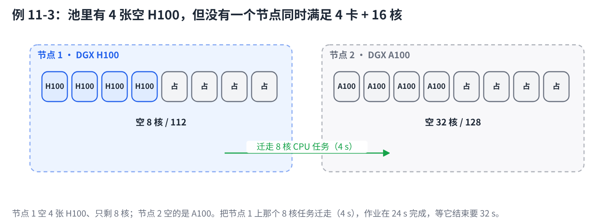
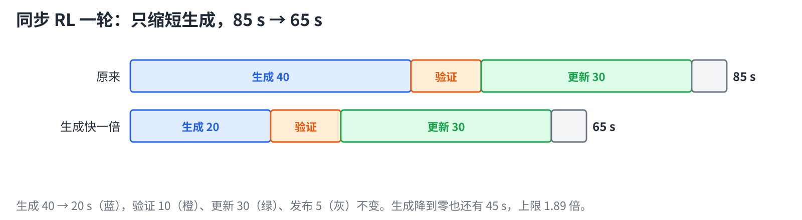
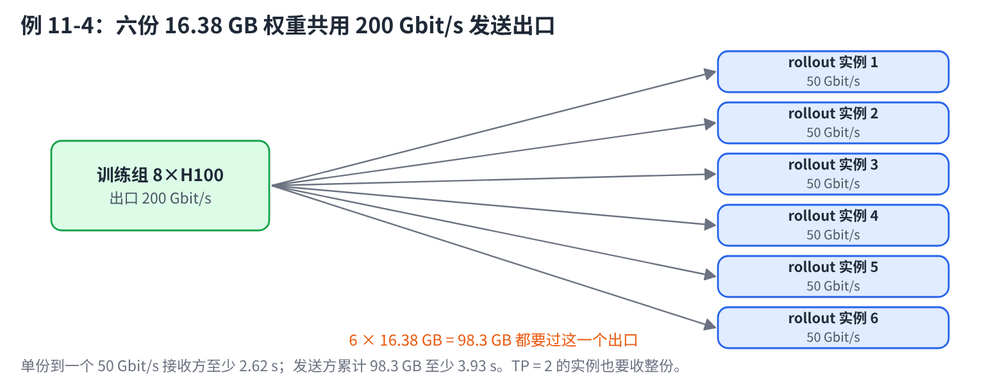
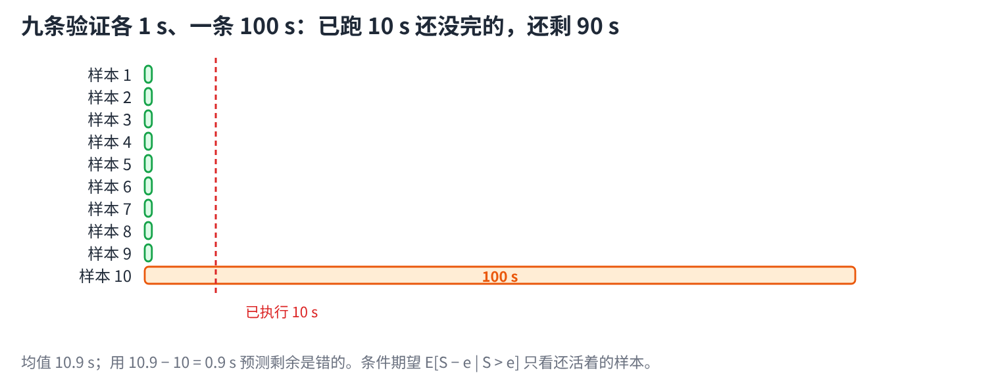
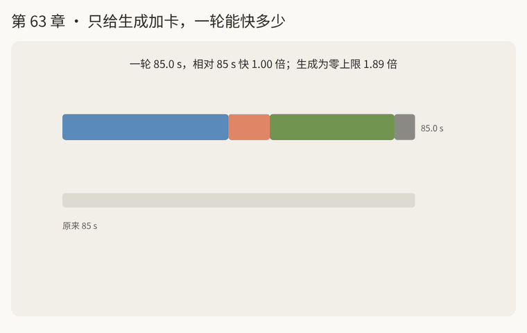

第 63 章 · 共享资源池与 RL 资源配比：资源够不够，还要看在不在一起
本地运行
git clone https://github.com/wikieden/ai-infra-from-constraints
cd ai-infra-from-constraints/code/notebooks
pip install jupyterlab torch numpy
jupyter lab ch63_resource_pool.ipynb也可以下载后直接用 VS Code 打开 .ipynb 运行。需要 GPU 的章节在 Colab 里选「代码执行程序 → 更改运行时类型 → GPU」。
本章回答：资源池里明明有四张空闲 H100，为什么四卡作业起不来？突发到达为什么让同样的工作量多等？在线和离线任务共用资源时，抢占为什么不一定来得及？RL 一轮里只给生成加卡，为什么最多快 1.9 倍？临时 rollout 实例拿到资源后要多久才能干活、值不值得租？验证的长尾怎么估计剩余时间？
讲解日期：2026-11-24 · 上一章：第 62 章 Agent 任务的资源需求与运行环境 · 下一章：第 64 章 模型服务的选择、成本与扩容
对应原文：materials/ai-infra-book/manuscripts/11-资源调度与运行环境.md§11.3 L290–L457（例 11-3、11-4，图 11-24 至 11-37）（重点 §11.3.3；其余只讲结论）
本章缩写：ASI = Alibaba Serverless Infrastructure（阿里 / 无服务器 / 基础设施）· LS = Latency-Sensitive（延迟 / 敏感）· BE = Best-Effort（尽力 / 而为）· SMT = Simultaneous MultiThreading（同时 / 多线程）· DRF = Dominant Resource Fairness（主导 / 资源 / 公平）· MIG = Multi-Instance GPU（多实例 / GPU）。全部缩写见 缩写与术语表
讲解
第一步：成组分配与碎片（2026-11-24）
类比：订四人桌。 餐厅一共空着四个座位，但分散在三张桌子上，一家四口还是坐不下。
原文 §11.3.1 L292–L319，例 11-3：作业要同一节点上 4 张 H100 + 16 核。节点 1（DGX H100，112 核）空 4 张 H100 但只剩 8 核；节点 2（DGX A100）空 4 张 A100 和 32 核。池里卡和核都够，没有一个节点同时满足。
| 方案 | 完成时间 |
|---|---|
| 等节点 1 的 CPU 任务结束（12 s）再跑（20 s） | 32 s |
| 把那个 8 核任务迁到节点 2（4 s）再跑 | 24 s |
| 跨节点兼容配置立刻起（准备 1 s，跑 32 s） | 33 s |

图 63-1 · 迁移耗时随状态增大，到 12 s 时与等待打平。调度器把预测的迁移耗时直接和原任务剩余时间比。
ASI 生产集群：配套 CPU 不足、成组启动、网络位置都会让空闲 GPU 用不上；加入可抢占的低优先级作业后，GPU 分配比例 68% → 93%。
一句话：空闲总数够只是必要条件；还得落在同一个合适的位置。
第二步：突发、放置与优先级（结论）（2026-11-24）
类比：银行窗口。 同样十个人，一分钟来一个不用排队；同时进门，平均要等 4.5 分钟。
原文 §11.3.2 L320–L367：
- 一个执行者，十项各 1 s：均匀到达不排队，同时到达平均等 4.5 s。
- 平台 48 核同时收到 80 次工具调用：32 个等 1 s，平均 0.4 s；两台（96 核）1 s 内全完。80 个环境要 160 GiB——始终驻留的方案本身就超了内存，每轮重建平均只占 180 GiB，剩下的才装得下突发。
- 放置：DSec 峰值每秒创建 5,000+ 沙箱、分到 160 个节点。每次都挑"最空"的节点，同一批请求会一齐挤过去。三招：随机抽几个挑最空（power-of-k-choices）、调度器补记自己刚放下的、节点自己检查容量不够就拒绝。
- 抢占来得及吗：在线最多等 2 s，离线保存状态要 30 s，可抢占也要 30 s 后才交还，所以要另留能 2 s 内交出的资源。
- 超线程的干扰：BE 负载占一半时，LS 任务每步慢约 45%，单靠
SCHED_IDLE几乎没改善（两个硬件线程共用执行单元）；加 core scheduling 降到约 17%。 - 公平：DRF 按主导资源份额分；Gavel、Pollux 再考虑不同卡的处理能力和训练进度。
一句话：总工作量定忙多久，到达时刻和顺序定每个人等多久。
第三步：RL 生成与训练的配比（2026-11-24）
类比：流水线上只给一道工序加人。 那道工序快了，其他几道不变，总时间降得越来越慢。
原文 §11.3.3 L368–L425：同步 RL 一轮
生成 40、验证 10、更新 30、发布 5 s，共 85 s。生成快一倍 → 65 s（1.31 倍）；生成降到零也还有 45 s（最多 1.89 倍）。

图 63-2 · 下一步要么让验证与生成重叠，要么加临时生成实例——但先算新实例加入前的准备开销。
例 11-4：给 6 个临时 rollout 实例发 Qwen3-8B 权重（16.38 GB）。每个接收方 50 Gbit/s，发送方 200 Gbit/s 出口共用：
接收实例越多，总字节越多，发送出口不变。TP = 2 只是把实例内部的计算分两张卡，每个实例仍要收整份 16.38 GB。

图 63-3 · 传完还要加载进显存、确认版本，才能接请求。
- 可用窗口 \(\max(L - T_0, 0)\)：准备 8 s，可用 20 s 只剩 12 s 能干活；可用 5 s 就白来了。
- 被提前收回时保存生成前缀：PolyRL 把一组响应截到最短已保存长度（4000 和 1000 → 各 1000，复用 2000、重生成 3000）。Qwen3-8B 4-bit 本地对照：保留前缀省 96 个 token，总耗时 12.8 s 反而比从头重做 11.6 s 慢——前缀重建和重新调度更贵。
- 值不值得租（RLBoost 历史价格）：训练 84 $/h + 6 × 5.3 $/h ≈ 116 $/h，吞吐要到 1.38 倍单位成本才降；1.2 倍时成本 1.15 倍，1.6 倍时 0.86 倍。
- 状态放在活得最久的资源上：DSec 早期 agent 循环和模型服务一起在可抢占 GPU 容器里，抢占就丢状态、靠命令日志重放；V4.1 起移到 CPU 平台的 worker 容器，和沙箱一起保存完整 rollout 状态。
场景代码：Ray 的放置组正是"成组分配"的接口，要么一起拿到，要么都不拿（真实 API）：
import ray
from ray.util.placement_group import placement_group
pg = placement_group([{"GPU": 1, "CPU": 4}] * 4, strategy="STRICT_PACK") # 4 卡 16 核必须在同一节点
ray.get(pg.ready()) # 凑齐之前不会部分启动
一句话：只加速一段，收益被其他段封顶；临时资源要扣掉准备和分发时间再算。
第四步：验证的长尾与最迟开始（2026-11-24）
类比：等一锅饭里最后熟的那块肉。 早下锅的能早熟，但开饭要等最慢的那块；估它还要多久，要看它已经煮了多久。
原文 §11.3.4 L426–L457：
- 第 0、10、20 s 到达、每条 10 s：逐条提交第 30 s 完，等齐再做第 50 s 完。工作一样多，差在提交时机。
- 剩余时间要条件期望：九条 1 s、一条 100 s，均值 10.9 s。某条已跑 10 s 还没完，用 10.9 − 10 = 0.9 s 就错了——它必然是那条 100 s 的，还剩 90 s：\(E[S - e \mid S > e]\)。

图 63-4 · 长尾分布下，"已经跑了很久"本身就说明它还要跑很久。
- 由整批完成时刻反推最迟开始：整批最早第 120 s 完，100 s 的活最迟第 20 s 开始，准备 5 s 则第 15 s 开始准备。
- 推迟验证要算全系统：验证省 60 H100·秒，却让 64 卡训练组多等 2 s（128 H100·秒）→ 净增 68；训练组只有 16 卡（32）→ 净省 28。
- 超时要真的停：只报告超时，后台线程还跑了约 130 ms；主动终止子进程约 0.8 ms 就退出。CUDA 性能验证里两个任务同时跑会改测得的时间和奖励。DSec 用 MIG 隔离测量、CPU 先编译再交 GPU、预热好的 Python 进程。
一句话：逐条提交早开始，长尾按条件期望估，超时要真终止。
动画演示：只给生成加卡

可交互版：animations/63-resource-pool.html（滑块：生成加速倍数 1–8；验证 0–30 s；更新 0–60 s；勾选：验证与生成重叠）。
怎么看：
- 横条依次是生成（蓝）、验证（橙）、更新（绿）、发布（灰）（第三步）；
- 右边是一轮时间和相对 85 s 的加速，以及生成降为零时的上限；
- 播放：1 倍（85 s）→ 2 倍（65 s）→ 8 倍（50 s）→ 验证与生成重叠。
练习与作答记录
题 1（第一步）：等待原任务结束要 6 s，迁移要 8 s，本地运行 20 s。选哪个？迁移耗时多少时两者打平？
作答记录：（待作答）
题 2（第三步）：一轮生成 60、验证 20、更新 20、发布 10 s。生成快 3 倍时一轮多久？上限多少倍？
作答记录：（待作答）
题 3（第三步）：给 10 个临时实例各发 14 GB 权重，接收方各 25 Gbit/s，发送出口 400 Gbit/s。全部收完至少多久？实例可用 15 s、加载与准备另需 6 s，能干活多久？
作答记录：（待作答）
口诀
空座位散在三张桌，四口之家坐不下；挪一个人还是等一桌散，比谁先凑齐；
十个人同时进门，平均等四分半；
只给一道工序加人，别的几道封顶；新人上岗先算交接时间；
等最慢那块肉，煮得久的还要煮更久。
本章复习卡片
I209（成组分配与碎片：等 32、迁 24、分散 33 s；突发平均等 4.5 / 0.4 s；抢占要算交还时间；SCHED_IDLE 45% → core scheduling 17%）、I210（RL 85 s：生成 2 倍 65 s、上限 1.89 倍；权重分发 max(2.62, 3.93) s；窗口 max(L − T₀, 0)；临时实例吞吐要 1.38 倍）、I211（逐条提交 30 vs 50 s；E[S − e | S > e] 90 s 不是 0.9 s；推迟验证要算被阻塞的训练组）。练习做完后，按答错、卡住的地方再补。
附录 · 延伸阅读
留给以后深入学习用，不影响本章主线。★ 是建议先读的。
推荐阅读
| 读什么 | 读哪里 | 读它为了什么 |
|---|---|---|
| ★ AII 第 11 章 | §11.3 L290–L457 | 本章原文 |
| Ghodsi et al. 2011《Dominant Resource Fairness》（NSDI） | DRF | 多资源公平 |
| Mitzenmacher《The Power of Two Choices》 | 随机抽 k 个 | 分散放置 |
| RLBoost、PolyRL（原文脚注 rollout / recovery） | 临时 rollout 实例 | 第三步的数字 |
| 第 60 章 强化学习训练系统 | 三阶段有效吞吐 | 前置 |
数学原理
- 成组分配：完成时间 = 备齐资源的时刻 + 运行时间，三种方案取最小。
- Amdahl：只缩一段，上限是 1/(其余占比)。
- 条件期望：\(E[S - e \mid S > e]\)，长尾分布下随 \(e\) 增大而增大。
公式清单
| 公式 | 意思 |
|---|---|
| \(T_{\mathrm{wait}} + T_{\mathrm{run}}\) 等三式 | 成组分配三方案 |
| \(T_{\mathrm{iter}} = T_g + T_v + T_u + T_p\) | 同步 RL 一轮 |
| \(T_{\mathrm{all}} \ge \max(W/B_{\mathrm{recv}}, nW/B_{\mathrm{send}})\) | 权重分发 |
| \(\max(L - T_0, 0)\) | 临时实例可工作窗口 |
| \(T_{\mathrm{batch}} \ge \max_i(a_i + c_i + g_i)\) | 验证整批下界 |
代码对照：把本章的数字用代码算一遍
代码
ai-infra/solutions/chapter-code/ch63_resource_pool.py，测试tests/test_ch63.py：
bash cd ai-infra/solutions/chapter-code uv run python ch63_resource_pool.py uv run pytest tests/test_ch63.py
| 讲义 | 写法 | 跑出来 |
|---|---|---|
| 第一步 | place_options() |
32 / 24 / 33 s |
| 第二步 | burst_waits(n, cores) |
平均 4.5 / 0.4 s |
| 第三步 | iteration(...)、broadcast_s(...)、cost_ratio(...) |
85 / 65 s、1.89 倍；2.62 / 3.93 s；1.15 / 0.86 |
| 第四步 | batch_done(...)、residual(...) |
30 / 50 s；90 s |
代码里才看得到的 3 件事：
burst_waits是 FIFO：第 i 个等 ⌊i / 核数⌋ 个服务时间；80 个在 48 核上正好 32 个等 1 s。broadcast_s只是下界，没计启动、加载进显存和确认版本。cost_ratio假设所有实例全程计费；临时实例只在用时计费时门槛会更低。
自己改一改（不影响练习答案）：
- 给
iteration加"验证与生成重叠"：一轮 = max(生成, 验证) + 更新 + 发布。 - 用
residual试几何分布（无记忆），看剩余时间是否与已跑时间无关。 - 用
broadcast_s改成树形分发（接收方收到后转发），估计 6 个实例的时间。